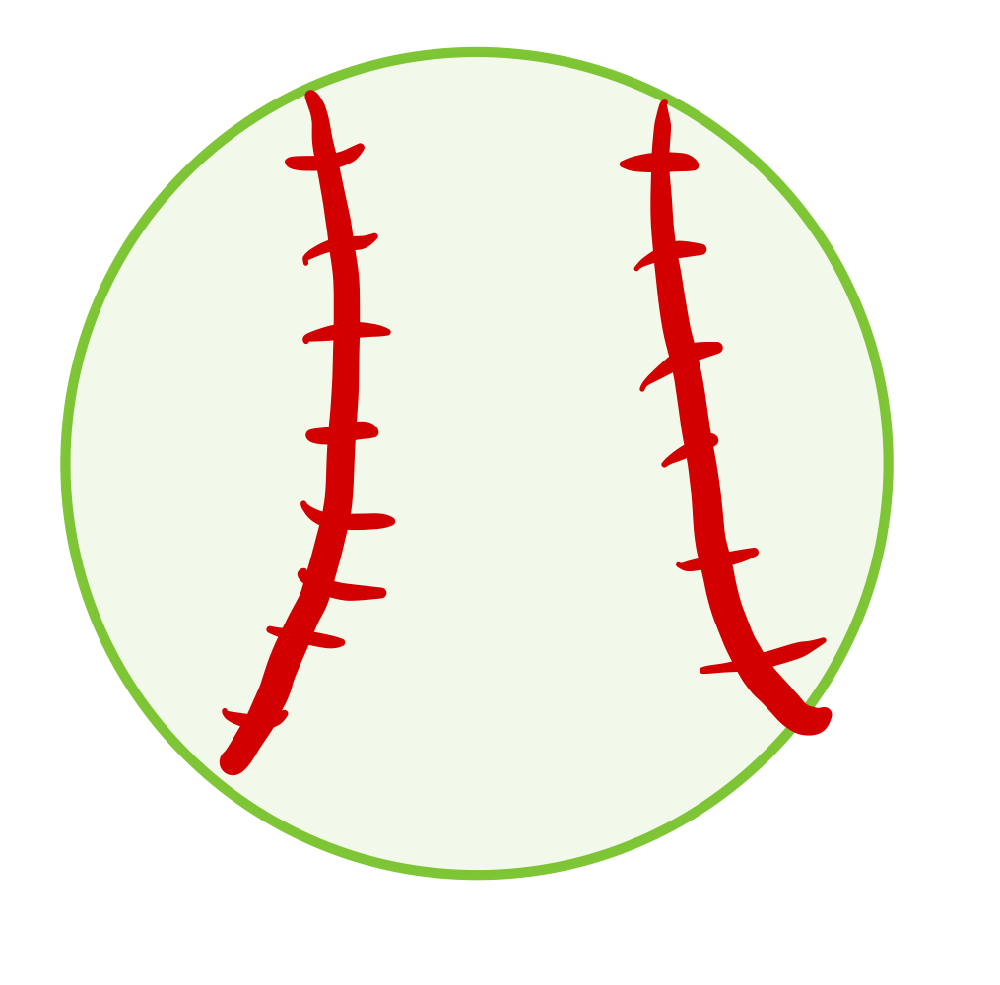
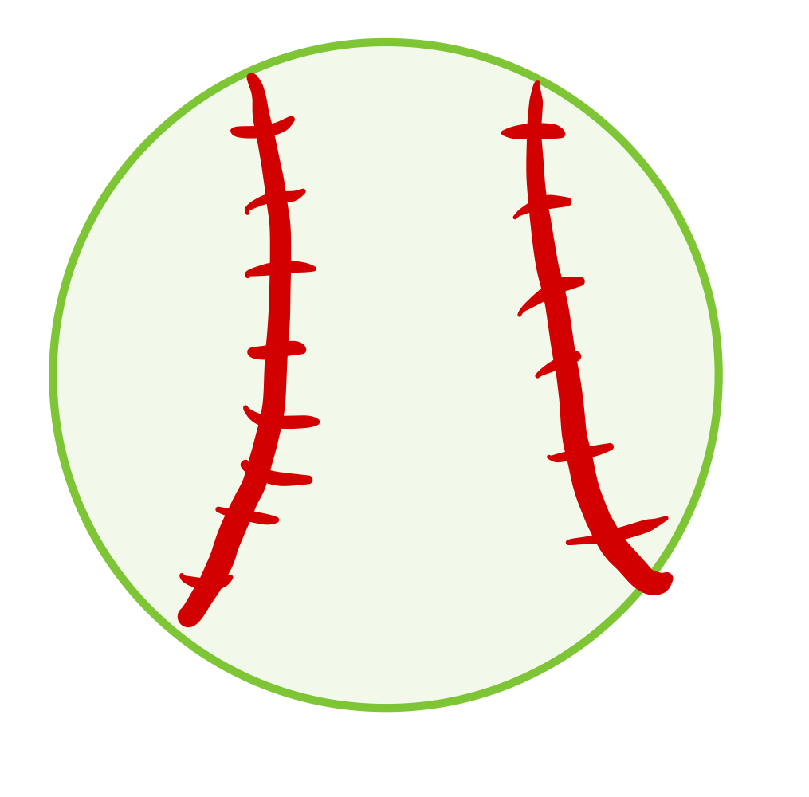

Fielding
 

When going to field a baseball there are a few important things that almost every good fielder does. First, having a pre pitch routine. Something such as a left, right, hop, or a right, left, in order to time the pitchers delivery to the plate to anticipate a hit at you. Another important thing is to have your glove out, and down near the ground. By having your glove low to the ground, you don't have to quickly try to bring it down or react to a bad hop.
Then if the ball is hit at you, run towards it, while keeping your glove somewhat in front of your body. When the ball nears you, bend back into an almost squat position with your butt down and your glove out with your eyes looking down at the ball. Watch the ball roll or bounce into your glove and field it with your glove and off hand on top like an alligators mouth. then transition the ball to your throwing had as you work your feet towards the base by either shuffling or click stepping, and then point your body and make the throw towards the base to make the out.
There are a few differences between fielding a baseball and a softball. First off, again the size of the ball plays a big role. This also makes the glove sizes different as softball gloves are bigger as they have to field a bigger ball. A hit from a baseball bat, comes off the bat faster than that of softball. A softball field is smaller, so the infield is closer to the hitter than that of baseball. The infield on a baseball field is grass which helps to slow the ball down, as the infield of a softball field is all dirt. These are just a few examples of differences between fielding a baseball and a softball.